Четырехходовка № 000 составлена в ортодоксальном чешском стиле. Основу ее содержания составляют два варианта с жертвами тяжелых белых фигур и аналогичными правильными матами;
№ 000
Я. Котрч Пражский к онкурс, 1886 г. I приз
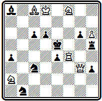
Мат в 4 хода
1. Са6 Kd 5 2. Л:е4+ Кр:е4 3. Cd 3+ Kpd 4 4. Ке6# и 1... Kpd 5 2. Ф d 3+ ed 3. Сс4+ Крс5 4. Kd 7#. В последнем варианте получается еще чистый мат при 3... Кре5 4. К: g 6# (не будь коня а2, он был бы и экономичным). Взятие черными этого коня на первом ходу 1... К:а2 не препятствует осуществлению угрозы 2. Kd 7+ Kpd 5 3. Фd 3 + cd 4. Сс4 # , но делает мат правильным. При рассмотрении задач чешских авторов надо иметь в виду подобный прием, чтобы не пропустить какой-либо вариант, содержащий правильный мат. Дополнительные игры: 1... К b 5 2. Kd 7+ Kpd 4 3. Kb 4; 1... Л f 5 2. Л: f 5+ Кр: f 5 3. Сс8+; 1... с5 2. Сс4 Сс 6 3. К: g 6 +
Не имея возможности подробно остановиться на творчестве других чешских проблемистов конца XIX века, приведем несколько характерных примеров из числа их лучших достижений.
Композиция № 000 открывается исключительно красивым и трудным первым ходом
№ 000
Я. Глинены Пражский к онкурс, 1891 г. I приз
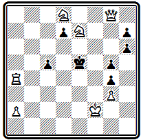
Мат в 3 хода
1. Ла7. Ладья покидает сильную позицию, предоставляет королю два свободных поля только для того, чтобы уничтожить мешающую черную пешку. Грозит 2. Л: d 7 с правильным матом после 2... Kpf 6 3. Ф b 8#. При 1... Kpd 6 решает эффектная жертва ферзя для вскрытия седьмой горизонтали и блокирования поля е6: 2. Фе6+ de 3. Kf 7#. Движение черной пешки d7 приводит к двум вариантам: одному —с правильным матом 1... d 6 2. Кре3 Kpf 6 3. Ф h 8# и другому — с чистым 1... d 5 2. Кес 6+ Кре4 3. Ф: h 7 #.
Жертвы белых фигур были весьма популярны в чешской композиции в ее ранний период.
Характерны в этом отношении два следующих произведения. В примере № 000 белый ферзь жертвуется дважды:
№ 000
К. Мусил «Шахматный журнал» 1894 г. I приз
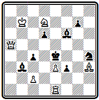
Мат в 3 хода
1. Ф b 5 Cd 4 2. Ф d 5+ Кр: d 5 3. е4# и 1... f 2 2. Ф f 5+ К: f 5 3. Cg 2# — в первом варианте для завлечения черного короля в матовую позицию, во втором—для отвлечения коня и блокирования поля.
Интересен вариант 1... Сс3 с тихим ходом 2. К b 6 С: e 1 и красивым фронтальным матом 3. Фе8 #, ставшим возможным вследствие блокирования черной пешки с4 слоном. Угроза 2. Се 6 .
В задаче № 000 ферзь жертвуется в варианте
№ 000
Я. Швейда «Нейе иллюстрирте блат», 1898 г. I приз
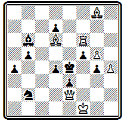
Мат в 3 хода
1. Kpg 1 d 3 2. Ф: g 4+ fg 3. Л f 4# для открытия пути ладье; в двух других разветвлениях жертвуются слои и ладья для завлечения короля: 1... Кс4 2. Cd 5+ Кр: d 5 3. Фg2# и 1... Kd 1 2. Л: f 5 Кр: f 5 3. Фd3#. Четвертый правильный мат получается при 1... Cd 8 2. Ф: b 5 С: f 6 3. Cd 5#. Угроза 2. Ф f1 .
Следует отметить, что в дальнейшем отношение чешских авторов к игре с жертвами несколько изменилось. Они начали расценивать жертву как прикрытие неэкономичности, своеобразное средство избавления от лишних фигур, и стали ограничивать использование этого приема, особенно жертвы сильнейшей фигуры — ферзя.
Пример № 000 интересен эффектной тихой угрозой,
№ 000
Л. Ветешник «Курьер варшавски», 1896 г. I приз
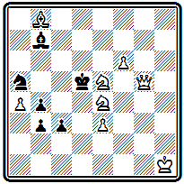
Мат в 3 хода
возникающей после 1. Кс5. Белые, сохраняя за черными возможность объявления шаха собственному королю, покидают ферзем сильную позицию и красивым длинным ходом становятся в засаду за свою пешку — 2. Фg1 Кр:с5+ 3. е4#. Можно осуществить угрозу и при другом порядке ходов: 2. е4+ Кр:с5 3. Фg1#, но на ответ, например, 1... с2, освобождающий поле с3, необходимо играть именно 2. Фg1. При 1... К c 6 используется перекрытие слона и блокирование поля: 2. Фg8+ Кр:с5 3. Kd 7#. В варианте 1... Кс4 2. Ф g 2+ Kp :с5 3. Kd 7# проходит тот же мат, но с использованием блокирования другого поля. На шах 1... Кр:с5+ - следует 2. Кс6+ Кр:с6 3. Ф b 5# с матом, который был бы правильным, стой черный слон на а8 вместо b7.
Большой популярностью пользовалась у чешских авторов тема эхо-матов. Повторение одного и того же матового положения с сохранением одинакового относительного положения основных действующих фигур в двух, а то и трех вариантах всегда привлекало пристальное внимание. Примеры подобных задач мы уже видели выше. Приведем еще один образец четырехходовки с тремя эхо-матами слоном— № 000.
№ 000
Л. Цимбурек Пражский конкурс, 1891 г. I приз
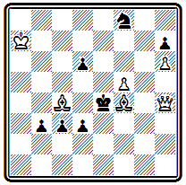
Мат в 4 хода
После 1. Ф g 3 грозит 2. С: d 6 Кр: f 5 3. Ф f 4+. Идейные правильные маты получаются в вариантах: 1... Kg 6 2. Фе 3 + Кр: f 5 3. Се6+ Kpf 6 4. Cg 5#; 1... Кр: f 5 2. Ф g 5+ Kpe 4 3. Cd 5+ Kpd 4 4. Ce 3#; 1... Kpd 4 2. Ф: d 3+ Kpc 5 3. C : d 6+ Крс6 4. Cb 5 # .
Задача № 000 отличается глубиной содержания при красивом построении и правильных матах.
№ 000
В. Тузар Пражский конкурс, 1895 г. I приз
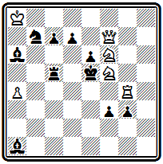
Мат в 4 хода
У белых есть очень сильный ход 1. Ф g 7 с двумя угрозами: 2. Ке8+ Kpd 5 3. Ке7# или (например, если черные освободят королю поле с5 ходом ладьи) сначала 2. Ке7 с матом 2... Kpd 6 3. Ке4 #. Не спасает 1... Лс4, защищая поле е4, ввиду возможности использовать блокирование поля с4 путем 2. Ke 4+ Kpd 5 3. Ке7#. И все же ход 1. Ф g 7 сразу не решает, так как у черных находится очень тонкое опровержение 1... Ла5! Угроза 2. Ке8+ не проходит из-за освобождения поля с5, 2. Ке4+ освобождает поле с4, а тихий ход 2. Ке7 позволяет черным объявить встречный шах ходами слона а6. Необходимо предварительно сыграть 1. Ф f 8, создавая угрозу с жертвой ферзя 1... Л~ 2. К: d 7+ Kpd 5 3. Ф d 6+ cd и правильным матом 4. Ке7#. Только когда черные прибегнут к защите 1... С b 5, закрывая для ладьи поле а5, белые осуществят свой план — 2. Ф g 7 с указанными выше вариантами и двумя правильными матами: 2... Лс4(с6) 3. Ке4+ Kpd 5 4. Ке7(е3)# . Красивая тихая игра осуществляется и в разветвлении 1... Кр: f 5, также завершающемся правильным матом 2. Ф h6 е5 (грозил мат 3. Ф g 5 #) 3. Kd 5 Kp : g 4 4. Ке 3#. Выдающееся произведение.
Позиция № 000 интересна разнородностью правильных матов, несколько необычным материалом (отсутствуют белые кони) и своеобразием конструкции — у белых две батареи.
№ 000
В. Цизарж Пражский конкурс, 1898 г. II приз
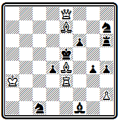
Мат в 3 хода
В варианте 1. Ле2 f 5 2. Ф b 5+ Кре6 3. Cd 5# правильный мат дается двойным шахом; при 1... Kg 5 2. Cd 8+ Ке6 3. Сс7#— правильный мат со связанным черным конем; в двух остальных разветвлениях проходит мат слоном при положении черного короля на f4 один раз со смежного поля при поддержке ладьи 1... d 3 2. Сс5+ Kpf 4 3. Се 3#, другой — через поле от короля 1... К(С):е2 2. Cb 4+ Kpf 4 3. Cd 2 #. Последний вариант является и угрозой. Дополнительные варианты: 1... g 3(К b 3) 2. Фd7; 1... Kpf 4 2. Ф b 8+; 1... К f 8 2. С: f 8+.
В самом конце XIX века начали свой творческий путь три выдающихся мастера, которые уже в нашем столетии сыграли большую роль в дальнейшем развитии чешской школы — Зденек Мах, Мирослав Хавель и Эмиль Палькоска.
В 1898—1899 гг. Мах получил несколько отличий на международных конкурсах за задачи, отличавшиеся весьма своеобразным построением. В них на стороне белых участвовали, кроме короля и ферзя, лишь две-три фигуры при полном отсутствии пешек. Игра заключалась в создании трех-четырех разнообразных правильных матов. Примером может служить композиция № 000.
№ 000
З. Мах «Афтонбладет», 1899 г. специальный приз
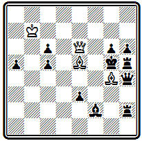
Мат в 3 хода
Тонкий первый ход 1. Кра8, уводящий короля в укрытие, подготавливает осуществление тихой угрозы 2. Cf 5 с далеким фронтальным матом 2... gf 3. Ф g 8#. Другой подобный мат проходит уже по горизонтали после блокировании поля g3 - 1... Ф(С) g 3 2. Cf 6+ Кр f 4 3. Фс4#. В третьем варианте используется блокирование поля h3: 1... Ф h3 2. Ф f 6+ Кр: g 4 3. Ф f 4 # .
В том же стиле начал работать и Хавель, ставший в XX веке едва ли не крупнейшим представителем чешской школы.
Одна из его первых задач № 000 содержит четыре различных правильных мата:
№ 000
М. Хавель «Ческе листы шахове», 1899 г.
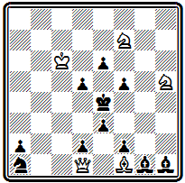
Мат в 3 хода
1. Кр b 5 угроза 2. Фа4+ d 4 3. Фа8#; 1... f 4 2. Kg 3+ fg 3. Ф g 4#; 1... K ~ 2. Фс2+ Kpf 3 3. Ke 5 # ; 1... Kpd4 2. Ф :a1+ Kpe4 3. Kg5#.
В заключение приведем несколько двухходовок. Ограниченное число ходов не позволяет осуществить в этой форме характерное для чешского стиля перестроение и разнообразие матовых картин. Поэтому чешские мастера считали двухходовку не соответствующей духу принципов своей школы. Показательно, что до самого недавнего времени в Чехословакии не было организовано ни одного конкурса составления двухходовок.
Задача № 000 открывается эффектным первым ходом, жертвующим две основные фигуры белых:
№ 000
И. Поспишил «Газетта литерария», 1887 г.
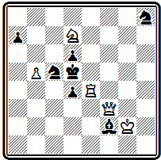
Мат в 2 хода
1. Фс3. Взятие этих фигур завершается тремя правильными матами: 1... dc 2. Kf 6#; 1... Кр:е4 2. Ф f 3#; 1... К:е4 2. Ф b 3# (угроза 2. Kf 6#, 1... К: d 7 2. Фс 6# , 1... С h 4 2. Ф: d 4 # ).
Уже на этом примере видно, что если в двухходовках и удается достичь некоторого разнообразия правильных матов, то оно получается не путем осуществления маневров белых фигур —для этого просто нет времени,— а за счет уничтожения этих фигур черными.
Так, в композиции № 000 три различные черные фигуры бьют белую ладью, что ведет к трем разным правильным матам:
№ 000
В. Тузар «Шахматный журнал», 1892 г. II приз
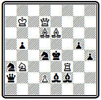
Мат в 2 хода
1. Cg 8 К: f 3 2. Ф h 7#, 1... С: f 3 2. Кс5# и 1... Кр: f 3 2. Cd 5# (1... Се3 2. Л:е 3# ; 1... Ф: d 2 2. К: d 2 # ; 1... Ке 6 2. Фс 6# ; 1... ~ 2. Ф g 4 # ).
Ясно, что возможности подобных комбинаций весьма ограничены, и двухходовка с правильными матами сравнительно быстро себя исчерпала. Она продолжала еще некоторое время развиваться в XX веке, но очень скоро оказалась почти полностью вытесненной во всех международных конкурсах быстро развивающейся англо-американской двухходовкой, открывшей неизведанные богатства оригинальной тематики.
*
*
*
Мы познакомились с тремя основными школами, сформировавшимися в задачной композиции к последней трети XIX века. Сопоставляя общие принципы конструирования задач, сформулированные теоретиками каждой из школ, можно убедиться, что они почти полностью совпадают. Такие основные положения, как чистота и экономичность матов, правильность и единственность решений, идейная содержательность композиции, принимаются всеми направлениями. Но когда дело доходит до конкретного воплощения этих универсальных законов, начинаются расхождения.
Все согласны с тем (речь идет о конце XIX века), что маты должны быть чистыми и экономичными. Однако для английских проблемистов это условие —лишь техническая деталь, у них правильные маты не имеют отношения к содержанию задачи, под которым они понимают все, что заключено между первым ходом и матом; немецкие авторы включают правильный мат в идейный замысел, но лишь в качестве элемента главной игры наряду с приводящими к нему форсированным финалом и скрытым введением; наконец, у чешских мастеров правильные матовые картины составляют основу идейного замысла.
Все согласны с тем, что в задаче должна быть идейная игра, раскрывающая основной замысел. Однако немецкие композиторы под идейной игрой понимают один, главный, вариант, отводя остальным разветвлениям вспомогательную роль и создавая их не для развития содержания, а лишь для затруднения решения; чешские авторы считают идейную игру сочетанием всех вариантов (обычно не менее трех),
заканчивающихся правильными матами; наконец, английские проблемисты в понятие идейной игры включают все без исключения варианты, имеющиеся в задаче.
Все согласны с тем, что задача должна быть красивой. Однако чешские композиторы видят красоту в разнообразии матовых картин, в легкости и изяществе построения; для английских авторов красота заключается в четкости и безупречной правильности решения, в полном отсутствии дуэлей, даже на самые незначительные ходы черных; наконец, в глазах немецких проблемистов красота означает сложность замысла, гармоническое соответствие вступления и матового финала.
И это только три основных, главных, направления, между которыми имеется еще ряд промежуточных, переходных ступеней, определяющих стилевые особенности различных групп или отдельных выдающихся проблемистов. Такое разнообразие путей задачного творчества при единстве общих основных принципов свидетельствует о его неисчерпаемых возможностях, о безграничности дальнейшего развития.
ЧАСТЬ IV
ЗАДАЧНАЯ КОМПОЗИЦИЯ В ДРУГИХ ЕВРОПЕЙСКИХ СТРАНАХ И США
Глава 10
РАСПРОСТРАНЕНИЕ ШАХМАТНОЙ ЗАДАЧИ В ЕВРОПЕ
Задачная композиция в Голландии, Швеции, Дании, Венгрии, Италии, Швейцарии, Финляндии, Испании, Польше
До сих пор мы знакомились с развитием шахматной задачи в основных европейских центрах. Однако задачная композиция не замыкается ими. В большей или меньшей степени, раньше или позже она распространяется уже в XIX веке почти по всей Европе.
Уже в первом международном конкурсе «Эра» наряду с проблемистами Англии, Германии и Австрии принимали участие бельгийские и венгерские композиторы. К концу 70-х годов представительство значительно расширяется. Например, в Нью-Йоркском международном конкурсе 1880 г., проведенном в связи с V Американским шахматным конгрессом, из 53 участников лишь половина была из США, а другая представляла добрым десяток стран, причем, кроме Англии, Германии и Австро-Венгрии*, здесь были участники из Голландии, Швеции, Италии, Греции, Румынии и Канады. А десятилетием-двумя позднее среди призеров конкурсов можно было встретить еще представителей Дании, Испании, Швейцарии, Норвегии, первых успехов добились польские, финские и сербские проблемисты. О России нам предстоит особый разговор.
*Читателям, конечно, известно, что в этом насильственно сколоченном государственном объединении, распавшемся в 1918 году, под властью австрийской монархии находились не только венгерский, но также чешский, словацкий и ряд югославянских народов.
Во всех этих странах понемногу возникает шахматная печать — появляются отделы в общих изданиях и специальные шахматные журналы. Раньше других такой журнал создается в Голландии, затем в Швейцарии, зарождаются журналы в Испании, Дании и других государствах. Не все органы шахматной печати оказываются долговечными, некоторые вскоре прекращаются, другие выходят с перерывами, но так или иначе шахматные журналы получают значительное распространение. Во многих странах выходят книги по шахматной композиции, сборники задач.
Пионером в организации международных конкурсов составления задач в рассматриваемых странах явилась Италия. В приведенном ранее списке первых международных конкурсов упоминался и итальянский конкурс. А к концу века не оставалось ни одной страны из названных выше, в которой не был бы проведен хотя бы один международный конкурс.
Пожалуй, наиболее богатую историю имеет задачная композиция в Голландии. Ее краткое изложение дано в книге М. Нимейера «Антология голландской шахматной задачи за 1792—1933 годы» (41).
Пионером шахматной композиции в Голландии явился Ф. ван Ньевелт (1743—1826 гг.), опубликовавший первую задачу в 1792 г. Он же был автором первых голландских шахматных книг. Период работы предшественников современной композиции продолжается до 1846 г., когда в Голландии начинает выходить шахматный журнал «Сисса», непрерывно издававшийся до 1874 г. Задачный отдел этого журнала пользовался значительным авторитетом, в нем печатались не только голландские проблемисты, но и многие зарубежные мастера задачи.
Из произведений этого периода приведем задачу № 000, содержащую тонкие маневры белого слона.
№ 000
Г. де Бур «Сисса», 1862 г.
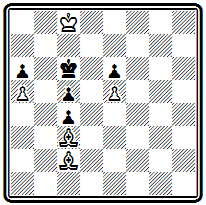
Мат в 6 ходов
Будь в начальном положении ход черных, они получили бы мат в 4 хода. Действительно, на 1... Кр b 5 следует 2. Cd1 Крс 6 3. Ch 5 с матами 3... Кр b 5 4. Се8# или 3... Kpd 5 4. Cf 3#, в случае же 1... Kpd 5 готов ответ 2. Cg 6 и после 2... Крс6 снова 3. С h 5 с теми же матами. Однако белые не имеют выжидательного хода и вынуждены потерять два темпа, чтобы вернуться к исходной позиции, но при ходе черных: 1. Cg6 Kpd5 2. С b1 (или Ch7) 2... Крс 6 3. Сс2, после чего проходит указанная игра. При симметричном расположении фигур несимметричное решение.
Годы 1874—1892 характеризуются отсутствием периодического печатного издания в Голландии. Композиция продолжает совершенствоваться, но авторы публикуют свои произведения преимущественно в зарубежных изданиях. К этому времени относятся первые успехи голландских проблемистов на международных конкурсах.
Композиция № 000 — первая работа голландского автора, получившая в конкурсе высшее отличие.
№ 000
А. Адама «Бритиш чесс мэгезин», 1887 I приз
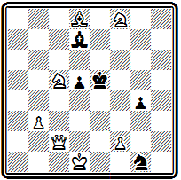
Мат в 3 хода
После хода 1. Ф h 7, которым ферзь перешел через критическое поле d3, грозит 2. Kd3+. При игре короля на d4 и f4 проходят два чистых мата: 1... Kpd 4 2. Ф h 6 Кр:с5 3. Ф b 6# и 1... Kpf 4 2. Kd 3+ Kpf 3 3. Ф h 1#. Остальные варианты таковы: 1... Kpd 6 2. Kd 3; 1... d 4 2. Фе4+; 1... Cf 5 2. Фс7+; 1... С b 5 2. Фе7+; 1... Kf3 2. Kf : d 7+. Задача в английском стиле и удостоена первого приза на большом английском конкурсе.
Оригинальна по конструкции позиция № 000 — в ней нет пешек.
№ 000
Л. де Йонг «Баи фрай», 1890 г. IV приз
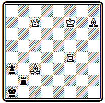
Мат в 3 хода
Тонкое вступление 1. Kpg 7 ставит черных в положение цугцванга. Наиболее интересен вариант 1... Кра2 2. Ф f 7+ с тремя матами при связке ладьи: 2... Кра1 3. Л f 1#, 2... Л bb 3 3. Л f 2 # и 2... Ла b3 3. Ла4 #. Последний мат — правильный. Этот вариант объясняет, почему надо играть королем и только на g7, а не на е7. Белый ферзь должен давать шах на f7, так как при 2. Фс4+ Ла b 3 мата не будет из-за перекрытия ладьи ферзем. Интересны разветвления 1...Ла6(а8) 2. Ф b 6( b 8) с тихими ходами и правильным матом 2... Л:Ф 3. Ла4#. На другие ответы ладьи следует ее взятие ферзем или ладьей.
Двухходовка № 000 составлена в англо-американском стиле.
№ 000
В. Мейнерс « Иллюстрейтид америкэн», 1891 I приз
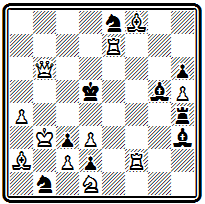
Мат в 2 хода
На ходы черной ладьи получаются 7 различных матов: 1. Ле6 Л g 4 2. Л f 5#; 1... Л f 4 2. Ке3# —с перекрытием; 1... Ле4 2. Л d 6#; 1... Л d 4 2. Фс6# – с блокированием; 1... Лс4 2. dc #; 1... Л b (а)4 2. Кр:Л#. При 1... Cg ( f )4 перекрывается ладья —2. Кр b 4# , а взятие ладьи позволяет использовать блокирование 1... С : е6 2. Фс 5# .
1892 г. открывает новый период, связанный с созданием Голландского шахматного союза и его ежемесячного органа «Тийдскрифт», продолжающего выходить до наших дней. Союз начинает регулярно проводить международные конкурсы составления задач.
В задаче № 000
№ 000
М. Коэйерс «Амстердамер веекблад», 1896 г. I приз
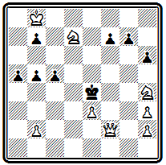
Мат в 4 хода
вступление 1. Kf 5 создает угрозу 2. Фg2+. Если черные защищаются, например, ходами пешек 1... g 5 или 1... h 5, то проходит вторая угроза 2. Kd 6+ Kpd 5 3. Крс7 и мат ферзем с полей f5 или f7. Этот же ход конем решает и при 1... Кр d 3. Парировать обе угрозы можно, играя пешкой «f», —1... f 6, но тогда белые дают правильный мат, используя блокирование поля: 2. Ф d 2 Кр: f5 (иначе 3. Kg 3+) 3. Ф d 5+ Kpg 6 4. Kf 8#. Центральный вариант получается после 1... Kpd 5, на что следует 2. е4+ с тонким продолжением 2... Крс4 3. К:с5 b 4 4. Kd 6# и еще двумя правильными матами при 2... Кр:е4 3. Ф g 2+ Kp : f 5 4. Ф g 4+ или 3... Kpd 3 4. Ke 5 #; 2... Кр e6 3. Ф: c 5.
Композиция № 000, принадлежащая одному из наиболее активных голландских авторов,
№ 000
И. Колпа «Лежер ауэ», 1900 г. I приз
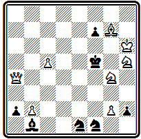
Мат в 3 хода
решается эффектным ходом 1. Cd 4, выключающим белого ферзя и освобождающим черному королю два свободных поля. Интересно разделение ответов слоном при ходах короля на эти поля: 1... Кр: g 4 2. Сс3+ Kpf 5 3. Kg 7# и 1... Кре4 2. Се 3+ г Kpd 3( d 5) 3. Kf 4 #. В первом варианте мат правильный. Еще два правильных мата, образующих между собой эхо, получаются в случае 1... Кре6 2. Kg 7+ Kpd 5 3. Kf 6# и 1… ~ 2. Ф d 7+ Kpe 4 3. Kf 2 #. Вторая угроза 2. Kgf 6.
В середине XIX века зарождается шахматная композиция в Скандинавии, в первую очередь в Швеции и Дании. Первые шаги проблемистов этих стран описаны в вводной статье к сборнику «Северные шахматные задачи годов», составленному совместно шведским композитором А. Ариелем и датчанином С. Серенсеном (42).
Одним из пионеров современной шведской композиции был И. Шульц, начавший составлять задачи в 1857 г. Интересна проблема № 000, относящаяся к первым годам его творчества.
№ 000
И. Шульц «Дейче шахцейтунг», 1860 г.
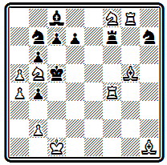
Мат в 5 ходов
Двумя вступительными ходами 1. Ke 6+ de 2. Се7+ Л:е7 белые подготовили осуществление красивого маневра с предоставлением черному королю двух свободных полей 3. Л g 2 b 3 4. Лс2+ bc 5. b 4; ходы черного короля также не спасают; 3... Крс6 4. Л d 2 + или 3... Kpd 5 4. Лg5 # .
Наибольшую известность в этот ранний период приобрели шведские проблемисты А. Арнель и Р. Сальберг.
Задача № 000 завоевала высшее отличие в одном из американских конкурсов.
№ 000
А. Арнель «Детройт фри пресс», 1877 г. I приз
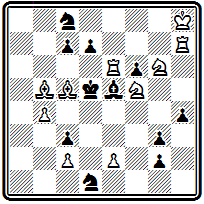
Мат в 4 хода
Первый ход 1. Kpg 8 атакует поле f7 и создает угрозы 2. Л: d 7 + Kd 6 3. Kfe 7+ и 2. Л: h 4 Кр:е 6 (2... ~ 3. е4 + ) 3. Kg 7+. Главный вариант 1... de содержит красивый тихий ход ладьей, становящейся в засаду за две фигуры—2. Л h 5. Грозит 3. е4+; не спасает 2... cf, так как после 3. e 4+ fe следует правильный мат при связанном слоне 4. Kf 4 # .
В Дании наибольших успехов в ту же пору достиг соавтор упомянутого выше сборника С. Серенсен. Он составлял сложные, трудные для решения задачи. Вероятно, именно его задачи имел в виду Лойд, когда писал о чрезвычайной трудности, отражающей суровость северного климата.
О пятиходовой задаче Серенсена из посылки, получившей I приз па конкурсе Британской шахматной ассоциации 1873 г, даже привыкшие к трудным решениям немецкие комментаторы вынуждены были написать «Kolossal schwer»
С. Серенсен Конкурс Британской шахматной ассоциации, 1873 г. I приз
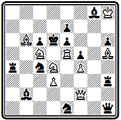
Мат в 5 ходов
1. Ф: b 2, угроза 2. Сс7+ Кр:с7 3. Ф b 7+, 1 … Л b 4 2. К: f 5 е f 3. Л:е7 Кр:е7 4. Ф f 6+; 1... К: b 2 2. Се8 Ла7 3. Кс:е 6 С:е6 4. Л:е 6+ Не справившись с трудностями устранения побочных решений. Серенсен вынужден был прибегнуть к грубому первому ходу со взятием слона.
Можно предложить такую версию задачи, с лучшим 1-м ходом - версия
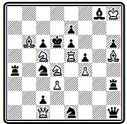
Мат в 5 ходов
1. Ф b 2 и т. д.
Задача № 000 относится еще не к самым трудным.
№ 000
С. Серенсен Конкурс Британской шахматной ассоциации, 1873 г. I приз
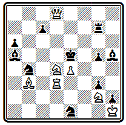
Мат в 4 хода
Первый ход 1. Л f 3 создает угрозу 2. Кс6+, которая проходит и при взятиях ладьи, приводящих к двум вариантам с правильными матами: 1... К: f 3 2. Кс6+ Кр:е4 3. Ф d 5+ К: d 5 4. Cc 2# и 1… С: f 3 2. Кс6+ Кр:е4 3. Фе8+ Ле7 4. Ф g 6#. Больше тонкости и трудности содержится в дополнительных вариантах: 1... Кес2 2. Ф f 6 +(вторая угроза) 2... Кр:е4 3. Ке 6 ; 1... Лg6 2. Kf 5 Кр:е4 3. Ф d 4 +
Любопытен пример № 000, где Серенсен осуществляет так называемую римскую идею задолго до открытия ее Котцем и Коккелькорном.
№ 000
С. Серенсен «Дейче шахцейтунг», 1862 г.
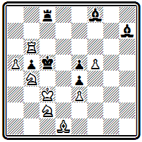
Мат в 3 хода
Нельзя сразу 1. Kd 4 с угрозой 2. К b 3# ввиду 1 ... Cg 8. Необходимо сначала отвлечь тематическую черную фигуру таким образом, чтобы при ее дальнейшей защите от угрозы возникало некоторое ослабление. Поэтому 1. Cf 3, угрожая 2. С:е4 и вынуждая 1... С: f 5 . Теперь, после 2. Kd 4, при прежней защите ходом слона на диагональ а2—g8 он окажется под ударом белого коня— 2... Се 6 3. К:е 6# .
В 1873—1881 гг. в Дании издается журнал «Нордиск шахтиденде», а с 1895 г. выходит на шведском языке «Тидскрифт фор скак».
Работы шведских и датских проблемистов последней четверти XIX века были собраны в двух сборниках: И. Рос «370 избранных шведских шахматных задач» (43) и И. Иесперсен «320 датских шахматных задач периода 1878—1902 годов» (44).
В Швеции в эти десятилетия выдвинулся Ф. Гейерштам. Его сложные содержательные произведения принесли ему много отличий на международных конкурсах. По стилю он приближался к немецкой школе. Задача № 000 содержит главный вариант с двумя вступительными ходами и двухходовым матовым финалом:
№ 000
Ф. Гейерштам Конкурс Западно-Германского шахматного союза, 1877 г. II приз
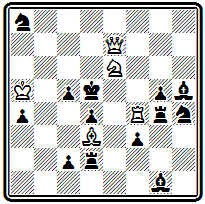
Мат в 4 хода
1. К:с5 Л: d 3 2. Ке4 Л: f 4 3. Ф e 6# и 4. Фе 6# . В зависимости от отступления короля на с4 или е4 получаются два разных правильных мата, объявляемых одним и тем же ходом ферзя. Угроза 2. Фе6+ c последующим 3. С b 5 или 3. Л f 6. На ответ 1... Кс7, защищающий поле е6, проходит другая угроза с тихим вторым ходом 2. К b 7 Л: d 3 3. Фс5 +.
Наиболее известна композиция Гейерштама № 000, завоевавшая I приз в конкурсе Германского шахматного союза.
№ 000
Ф. Гейерштам Конкурс Германского шахматного союза, 1883 г. I приз
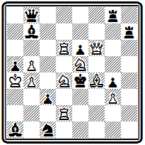
Мат в 3 хода
Блестящий первый ход 1. Ф h 8, удаляющий ферзя из игры и ставящий его под удары обеих ладей, приводит к двум симметричным вариантам с правильными матами: 1... Лg: h 8 2. К: g 4 cd 3. Kf 2 # или 2... Ф : d 6 3. Kf 6 # ; 1... Л h : h 8 2. Kd 7 cd 3. Kc5# или 2... Ф: d 6 3. К f6# .
В самом конце века Швеция дала нового большого мастера И. Фридлициуса, расцвет творчества которого относится уже к XX столетию. Он составлял главным образом трехходовки в чешском стиле и достиг в этом направлении значительных успехов. В дальнейшем по его стопам пойдет знаменитый норвежский композитор И. Шель, который станет признанным мастером ортодоксальной чешской школы.
Проблема № 000 выделяется хорошим первым ходом и серией правильных матов, из которых особенно интересны два первых:
№ 000
И. Фридлициус «С.-Пб. цейгунг», 1898 г. I приз
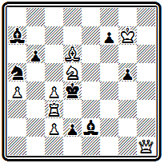
Мат в 3 хода
1. Л f 3 ~ 2. Ф h 4+ gh 3. Л f 4#; 1... C : c 4 2. c 3+ Kp : d 5 3. Л f 6#; 1... К:с4 2. Л d 3+ С: d 3 3. c 3#; 1... С: f 3 2. Фа1+ Кр:с4 3. Ке3#; 1... Кр:с4 2. Л f 4+
В задаче № 000
№ 000
И. Фридлициус Шведский конкурс, 1900 г. I приз
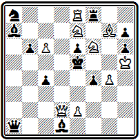
Мат в 3 хода
вступление 1. Kph 4, уводящее белого короля от появляющегося в дальнейшем шаха черной пешкой, подготовляет угрозу 2. Kg 6 +. Содержание задачи образует комплекс трех идейных вариантов с правильными матами: 1... Л: f 6 2. Ф d 5+ е d 3. Kf 5 # ; 1 ... Кс7 2. Ф d6+ Кр: d 6 3. Ке4 # ; 1... Фd4 2. Kd 7 + Kpd 6 3. Се5 # .